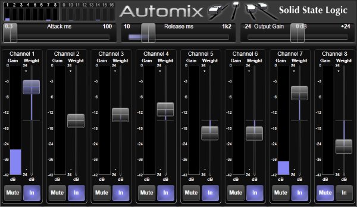

Automix
Automix assists in managing multiple live dialogue mics without having to continually ride their individual faders to eliminate spill and room colouration.
Automix detects which mics are receiving an input and makes fast, transparent crossfades between them, freeing the engineer to focus on balance and sound quality rather than be chained to the faders. These voice-controlled crossfades closely track unpredictable dialogue, eliminating cue mistakes and late fade-ups, while avoiding the choppy and distracting effects common to noise gates. The overall gain of multiple active channels is automatically adjusted to keep the overall output equivalent to a single channel, thus eliminating level build-up when more than one channel is contributing to the mix.

Activating Automix
Ensure that the input level for each channel to be included in the Automix is set appropriately.
Now assign Automix to a Rack Slot, and route it to the insert points of the channels. Automix is available in 4-, 8-, 12-, 16- and 24-wide versions. Choose the format that fits the number of channels you wish to mix (unused legs can be left unrouted and will not affect the algorithm).
Activate each channel to be included in the Automix by pressing the In button at the base of its Weight slider.
The Gain meters show the level of attenuation applied to each active channel.
Tip: Automix can be inserted into a channel pre- or post-fader. (See the Processing Order page for details on moving the Insert points.)It is also important to note that the channel Mute button will not mute the channel contribution to the Automix if pre-fader. The Automix Mute button should be used instead.
The Mute buttons in the Automix display allow you to mute the channel at this point in the channel strip. Its contribution to Automix will also be muted.
Weight
It is possible to alter the side-chain contributions of each channel by adjusting it's Weight control. Lowering the weight control on a channel decreases the channel gain during ambience and lowers the relative gain if the channel is active with other channels. Raising the weight increases the gain during ambience and increases the relative gain if that channel is active with other channels.
Attack & Release
Attack & Release of Automix fades can be adjusted using the Attack and Release sliders.
Useful Links
Detail ViewEffects Rack
Delay Effects
Dynamics Effects
EQ Effects
Modulation Effects
Reverb Effects
Other Effects Modules
Audio Tools
Index and Glossary